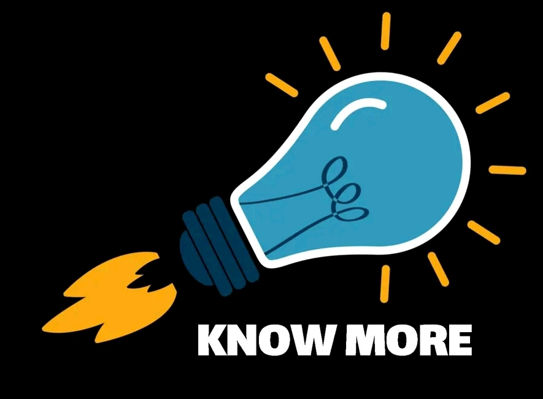

knowmore_5
La inteligencia artificial (IA) es una disciplina y un conjunto de capacidades cognoscitivas e intelectuales expresadas por sistemas informáticos o combinaciones de algoritmos cuyo propósito es la creación de máquinas que imiten la inteligencia humana para realizar tareas, y que pueden mejorar conforme recopilan información.
La inteligencia artificial aprovecha las computadoras y las máquinas para imitar las capacidades de resolución de problemas y toma de decisiones de la mente humana.
La inteligencia artificial abarca una gran variedad de subcampos, como el aprendizaje automático, el procesamiento de lenguaje natural, la robótica, la visión artificial, los sistemas expertos, los videojuegos y la ética de las máquinas.

Alan Turing es considerado el padre de la inteligencia artificial por su trabajo trascendental sobre la computación y la prueba de Turing.
SABER MAScreado por Aladar12